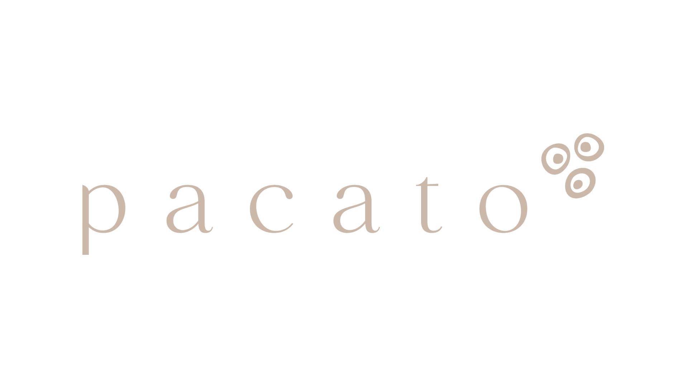

Pacato
10% de desconto ao apresentar o encarte Velt
Pacato é o retrato da cozinha mineira na alta gastronomia. Em 5 anos, virou um dos restaurantes mais premiados e badalados de BH: cozinha autoral do chef Caio Soter, elegante e sem cerimônia.
Horários
- Qua–Sáb: 12h às 16h / 19h às 23h
- Dom: 12h às 16h
- Seg–Ter: fechado